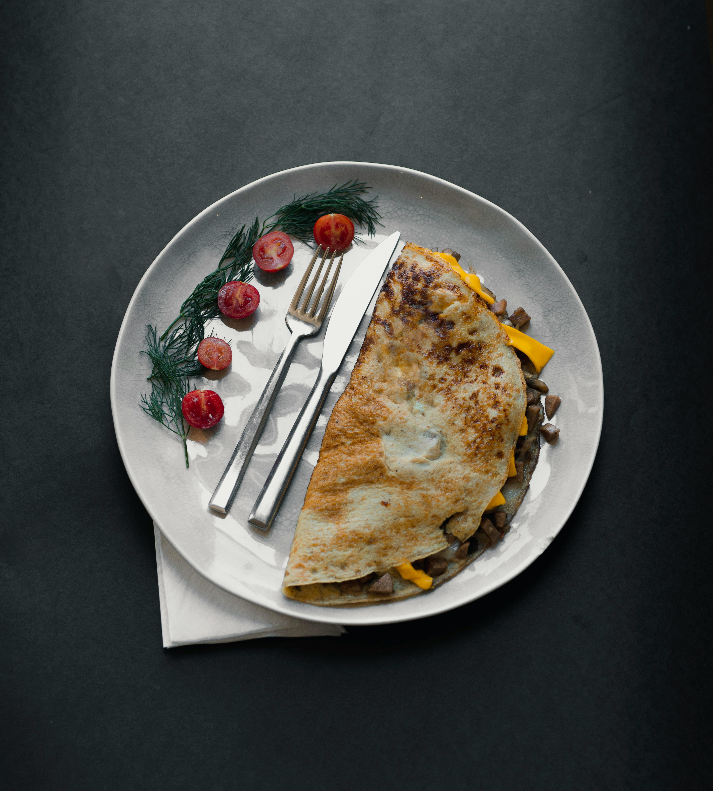

Omelette Recipe

Description.
An omelette is a quick and versatile egg dish, cooked in a pan and filled with ingredients like cheese, vegetables, or meats. It’s perfect for breakfast or a light meal, and ready in just minutes.
Ingredients
- 2 - 3 eggs
- Salt
- Black pepper
- Butter or oil
- Cheese (optional)
- Chopped vegetables (e.g., onions, bell peppers, spinach)
- Cooked meat (optional, e.g., ham or bacon)
Preparation Steps
- Crack the eggs into a bowl, add salt and pepper, and beat until well mixed.
- Heat butter or oil in a non-stick skillet over medium heat.
- Pour in the eggs and swirl the pan to spread them evenly.
- Cook for 1–2 minutes until the eggs start to set.
- Add cheese, vegetables, or meats on one half of the omelette.
- Fold the omelette in half and cook for another minute until fully set.
- Slide onto a plate and serve immediately.